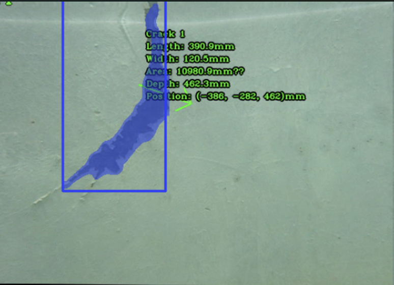

工程名称：DB-20220908111518712-34051
检测单位：xx公司
| 工程概况一览表 | |||||
| 坝区名称 | 测试 | ||||
| 坝区地点 | 平康路测试 | ||||
| 水库概况 | 此部分简要描述检测项目的背景、检测的目的和重要性。明确水库坝区检测的总体目标，例如评估坝体结构完整性、识别潜在安全隐患以及确保大坝的长期安全运行等。 | ||||
| 检测负责人 | xxx | 检测日期 | 2025-07-02 | ||
| 检测时间段 | 环境条件 | （如水深、流速、能见度、水质、天气情况等 | |||
| 检测方式 | 在线检测/离线检测 | 检测时长 | |||
| 检测深度(m) | 检测距离 | ||||
| 检测区域 | 平康路实验室水库 | ||||
| 检测对象 | |||||
| 坝体类型 | 重力坝、土石坝、拱坝等 | 坝体高度(m) | |||
| 坝体材料 | 混凝土、石料、沥青等 | 坝体运行时间 | |||
| 检测技术与设备 | 检测仪器设备名称 | 声纳检测仪、激光扫描仪、ROV（水下机器人）、高清摄像头 | |||
| 设备移动方式 | 自主航行、遥控操作 | ||||
| 检测方法 | 视频检测/声纳检测/ | ||||
| 备注 | |||||
水下混凝土表面裂缝检测
| 输入 | 识别内容 | 分类等级 | 是否处理 | |
|---|---|---|---|---|
| 缝宽 | 缝深 | |||
| 图像或视频 | δ ≤ 0.2mm | h ≤ 300mm | A类（轻微宽细微裂缝） | 是 |
| 0.2mm ≤ δ ≤ 0.3mm | 300mm < h ≤ 1000mm | B类（表面层次裂缝） | 是 | |
| 0.3mm ≤ δ ≤ 0.5mm | 1000mm < h ≤ 5000mm | C类（深层裂缝） | 是 | |
| δ ＞ 0.5mm | h > 5000mm | D类（贯穿性裂缝） | 是 | |
（参考规范 DL/T 5251-2010 水工混凝土建筑物缺陷检测和评估技术规程）
水下混凝土表面腐蚀和空蚀检测
| 输入 | 识别内容 | 分类 | 是否处理 |
|---|---|---|---|
| 图像或视频 | 局部混凝土粗糙和外露 | A类 | 不处理 |
| 混凝土局部强度和硬度较大，表面轻微粗糙、有粉末不明显脱落（未露筋） | B类 | 修补处理 | |
| 混凝土结构外露，形成大面积腐蚀、剥落破坏 | C类 | 修补处理，并将结构缺陷上报 |
（参考规范 DL/T 5251-2010 水工混凝土建筑物缺陷检测和评估技术规程）
水下混凝土渗漏检测
| 输入 | 识别内容 | 渗漏量 | 分类等级 | 是否处理 |
|---|---|---|---|---|
| 图像或视频 | 渗漏点 | 轻微的湿痕 | A类（轻微渗漏，不影响结构安全） | 否 |
| 局部有滴水现象 | 可见水珠 | B类（一般渗漏，建议处理） | 是 | |
| 存在流水状 | 连续水流 | C类（严重渗漏，必须处理） | 是 |
（参考规范 DL/T 5251-2010 水工混凝土建筑物缺陷检测和评估技术规程）
| 录像文件 | underwater_test1 | 起始标记 | underwater | 终止标记 | test1 | |
| 钢体类型 | 重力坝 | 坝体材料 | 混凝土 | 能见度 | ||
| 检测地点 | 平康路实验室 | 检测设备 | 机器人 | 水深位置 | 机器人 | |
| 检测负责人 | XXX | 检测日期 | 2025/07/02 10:51:23 |
|||
| 缺陷尺寸 | 状况描述 | 照片编号或说明 | ||||
| Length:390.9mm Width:120.5mm
Area:10980.9mm² Depth:462.3mm |
1_0.jpg | |||||
| 备注 | Position:(-386, -282, 462)mm | |||||
|

|
||||||